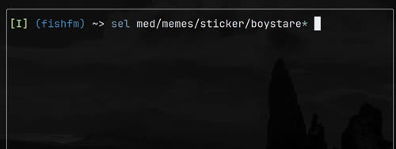
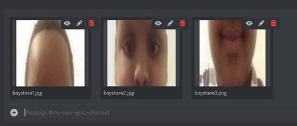
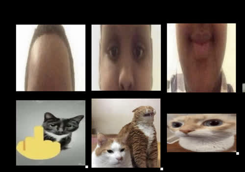

Using the shell as a file picker for Qutebrowser
Qutebrowser is pretty great (thanks The-Compiler <3). For those who don’t know about it, it’s essentially a Vim-like browser: there’s a bunch of cryptic shortcuts, but they maximize your efficiency. The best part of Vim, which is replicated in Qutebrowser, is the ability to do everything without taking your hands off the keyboard.
Anyways, an issue I had was that when uploading a file in Qutebrowser is that it calls on a normal GUI file picker.
This is probably a sane default, but the default file picker does not have Vim shortcuts (absolutely unusable!).
Now, you could use ranger, or vifm
in the way described here,
but that’s boring.
Instead, as a masochist power user, I manage all my files exclusively in the shell,
and I wanted to have that experience in Qutebrowser.
So, I made a 25-line script fish-fm that does just that.
Demonstration
Here’s an example usage of fish-fm.
First, when a website asks you to upload a file, qutebrowser opens a terminal window with fish-fm.
Then, you have a full fish shell in which
you can run sxiv, mpv, or any other command to inspect your files first.
This also includes all its features like history and autosuggestions.
Once you figure out what you want to upload, you then run sel [file paths].
The great thing about this is that you can use any glob or even xargs with this command.
As a demo:
 
sxiv selection
Optionally, you can run ssel [directory or file paths],
which uses sxiv to view your images.
Then, you can mark the images (see sxiv’s man page), and those will be uploaded.

Installation
- Install the dependencies: qutebrowser, fish
- Copy fish-fm somewhere in your PATH.
- Create a qutebrowser config.py. Then, add these lines:
c.fileselect.handler = "external"
c.fileselect.multiple_files.command = ["st", "-e", "fish", "-C", "set -x OUTPUT {}; source ~/.local/bin/fish-fm"]
c.fileselect.single_file.command = ["st", "-e", "fish", "-C", "set -x OUTPUT {}; source ~/.local/bin/fish-fm"]
Depending on your terminal, you might have to edit these commands.
I personally use st; yours may be different.
The {} here is a placeholder for a temporary file where fish-fm writes its output.
This is necessary because terminals don’t forward the stdout of their commands,
so fish-fm can’t just print the files selected.
- Your file picker is now a fish shell.